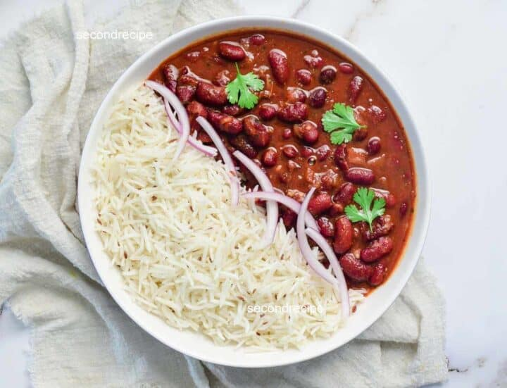

Home
Rajma Chawal

Rajma Chawal: Description
Rajma Chawal is a classic North Indian comfort food made with slow-cooked kidney beans simmered in a rich, spiced tomato-onion gravy and served with steamed rice. The rajma is hearty, flavorful, and pairs perfectly with soft, fluffy rice, making it a wholesome and satisfying meal.
Ingredients
- 1 cup rajma (kidney beans)
- 1 cut basmati rice
- 1 medium onion, finely chopped
- 2 medium tomatoes, pureed or finely chopped
- 1 tsp ginger-garlic paste
- 1 tsp oil or ghee
- 1/2 tsp turmeric powder
- 1/2 tsp cumin seeds
- 1 tsp coriander powder
- 1/2-1 tsp red chilli powder
- 1tsp garam masala
- Salt, to taste
- Fresh coriander
- water
Step
- Soak rajma in water overnight or for 8-10 hours.
- Drain and pressure-cook the ramja with fresh water and salt until soft
- heat oil in a pan and add cumin seeds.
- Add chopped onions and saute until golden.
- Add ginger-garlic paste and cook briefly.
- Add tomato puree, turmeric, coriander powder, chilli powder, and salt.
- Cook until the oil begins to separate from the masala.
- Add the cooked rajma along with some cooking water.
- Simmer for 15-20 minutes until the gravy thickens and flavors combine.
- Add garam masala and fresh coriander.
- Wash and cook the rice separately until fluffy.
- Server hot rajma with steamed rice.